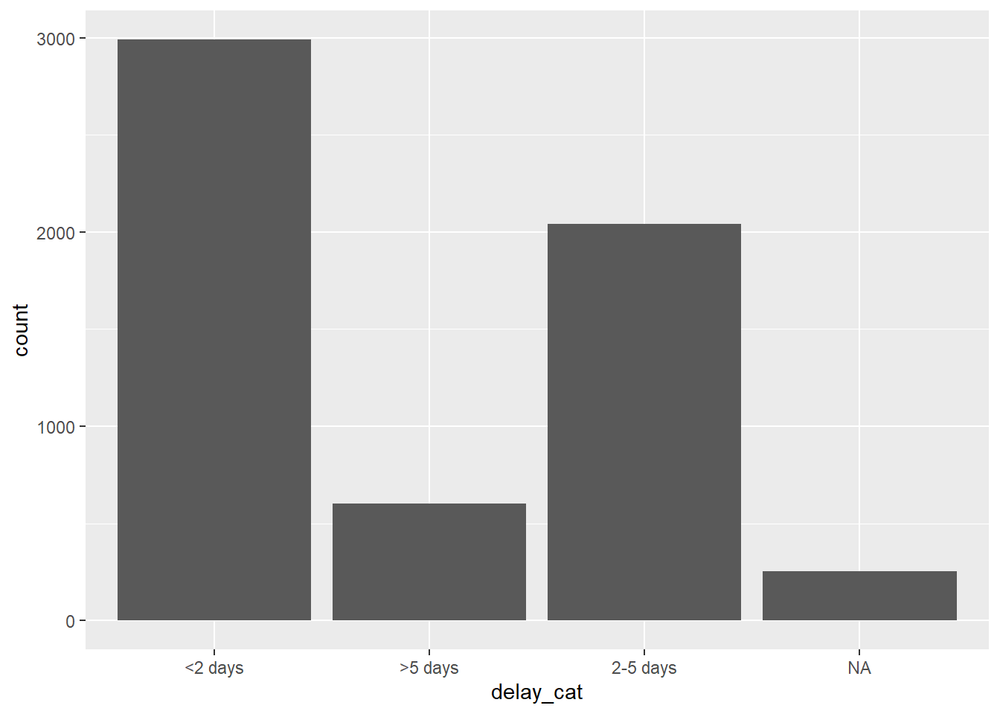
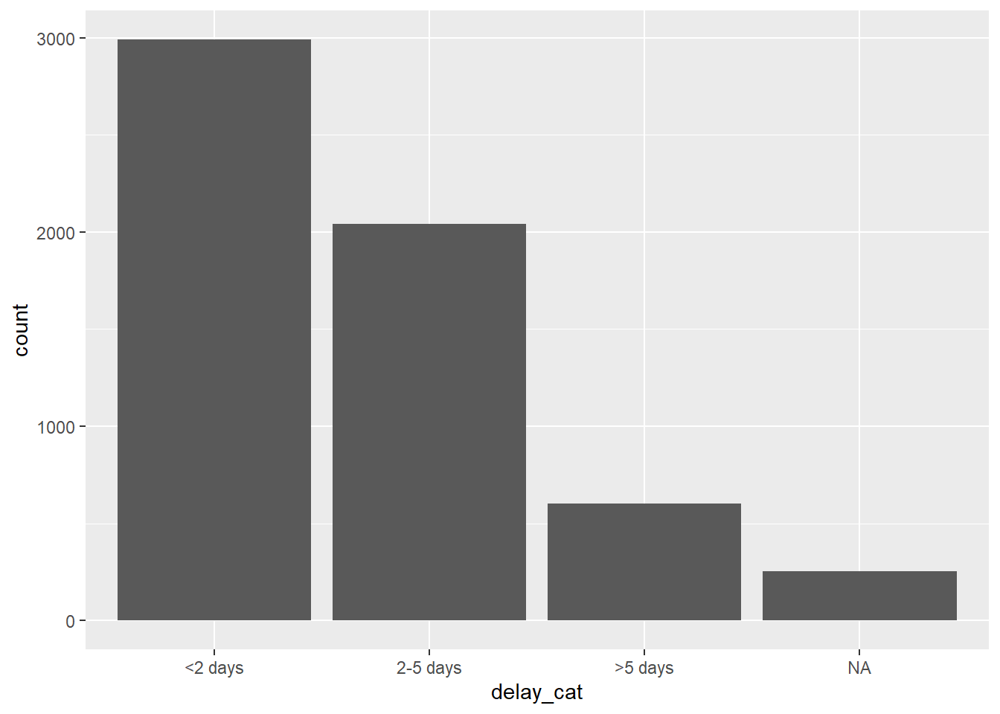
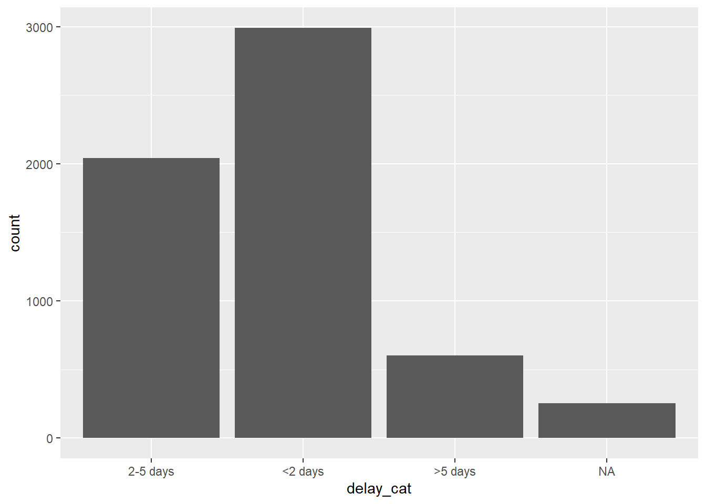
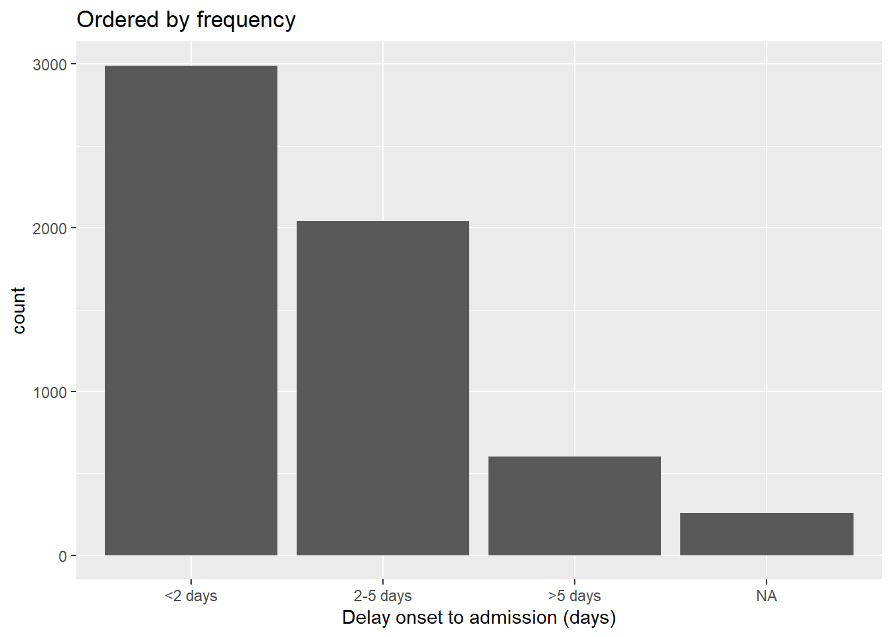
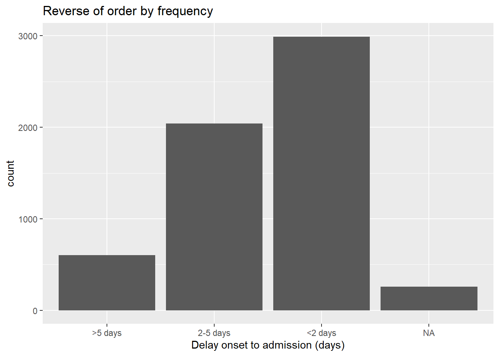
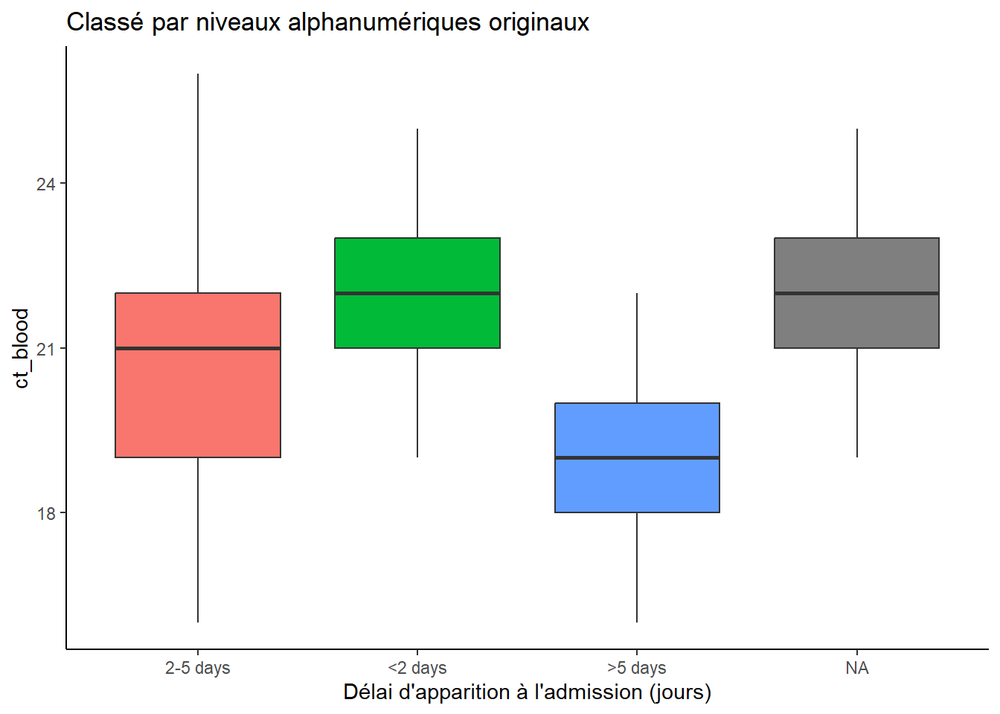
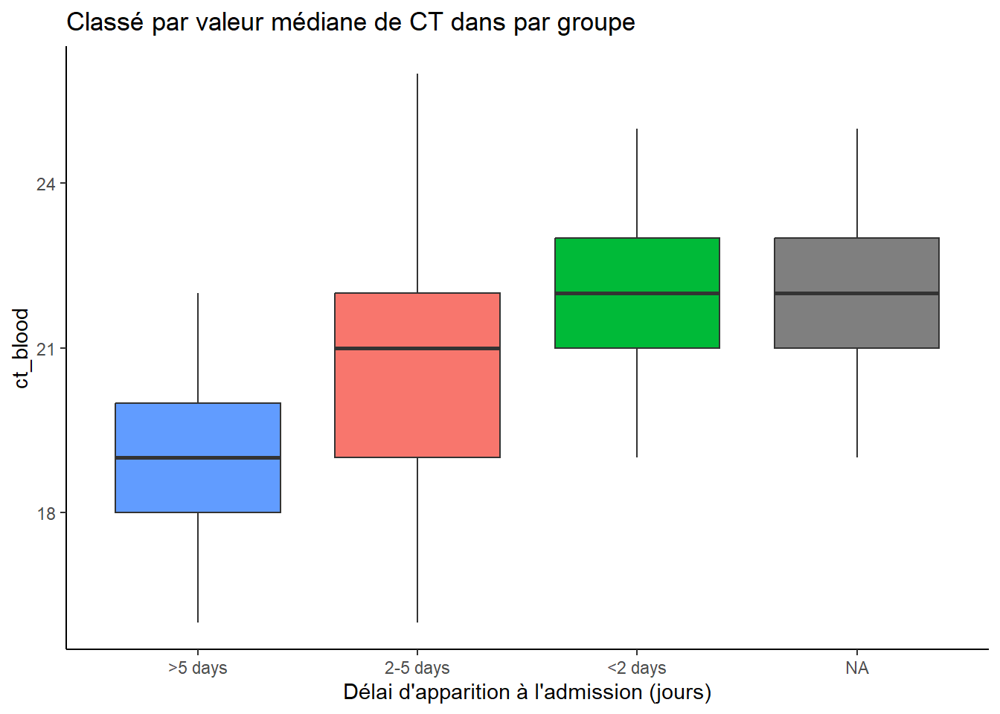
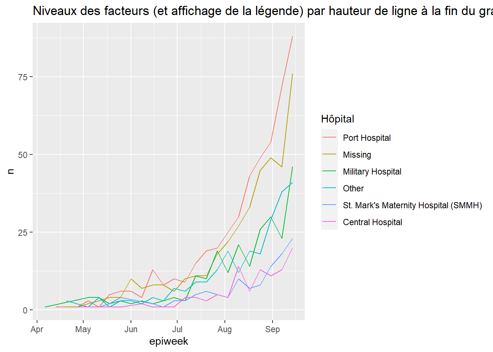
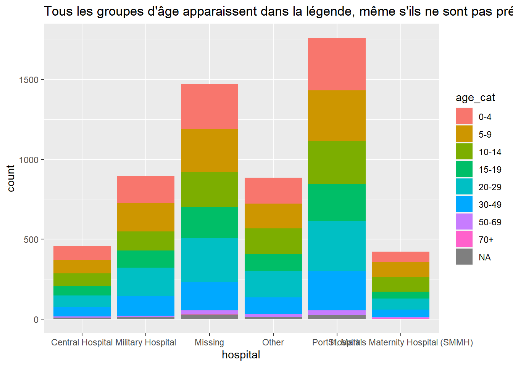
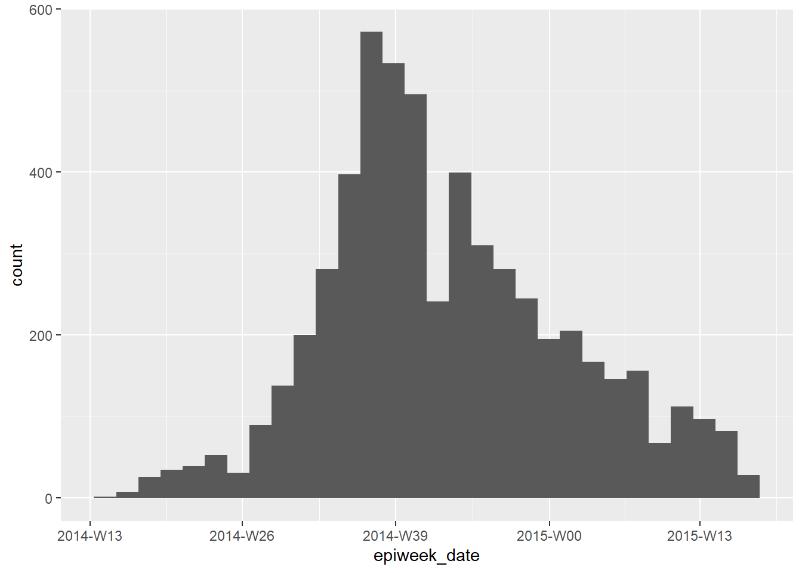

11 Facteurs
En R, les facteurs sont une classe de données qui permettent de créer des catégories ordonnées avec un ensemble fixe de valeurs acceptables.
En règle générale, vous convertissez une colonne de la classe caractères ou numérique en un facteur si vous souhaitez définir un ordre intrinsèque aux valeurs (“niveaux”) afin qu’elles puissent être affichées de manière non alphabétique dans les graphiques et les tableaux. Une autre utilisation courante des facteurs consiste à normaliser les légendes des graphiques afin qu’elles ne fluctuent pas si certaines valeurs sont temporairement absentes des données.
Cette page présente l’utilisation des fonctions du package forcats (un nom court pour “For categorical variables”) et de certaines fonctions R base. Nous abordons également l’utilisation de lubridate et aweek pour les cas de facteurs spéciaux liés aux semaines épidémiologiques.
Une liste complète des fonctions du pacakge forcats est disponible en ligne ici. Nous présentons ci-dessous quelques-unes des fonctions les plus courantes.
11.1 Preparation
Chargement des paquets
Ce morceau de code montre le chargement des packages nécessaires aux analyses. Dans ce manuel, nous mettons l’accent sur p_load() de pacman, qui installe le package si nécessaire et le charge pour l’utiliser. Vous pouvez également charger les packages installés avec library() de base R. Voir la page sur R basics pour plus d’informations sur les packages R.
pacman::p_load(
rio, # importer/exporter
here, # chemin des fichiers
lubridate, # travailler avec les dates
forcats, # facteurs
aweek, # creer epiweeks avec les niveaux des facteurs
janitor, # tableau
tidyverse # données management et visualisation
)Importer données
Nous importons le jeu de données des cas d’une épidémie d’Ebola simulée. Si vous voulez suivre, , cliquer pour telecharger le jeu de données “nettoyé” linelist (as .rds file). Importez vos données avec la fonction import() du package rio (elle accepte de nombreux types de fichiers comme .xlsx, .rds, .csv - voir la page Importation et exportation pour plus de détails).
# importer ton jeu de donnée
linelist <- import("linelist_cleaned.rds")Nouveau variable qualitative
Pour la démonstration dans cette page, nous utiliserons un scénario commun - la création d’une nouvelle variable catégorielle.
Notez que si vous convertissez une colonne numérique en facteur de classe, vous ne serez pas en mesure de calculer des statistiques numériques sur celle-ci.
Creation de colonnes
Nous utilisons la colonne existante days_onset_hosp (jours entre l’apparition des symptômes et l’admission à l’hôpital) et créons une nouvelle colonne delay_cat en classant chaque ligne dans l’une de plusieurs catégories. Nous faisons cela avec la fonction dplyr case_when(), qui applique séquentiellement des critères logiques (côté droit) à chaque ligne et renvoie la valeur correspondante côté gauche pour la nouvelle colonne delay_cat. Vous trouverez plus d’informations sur la fonction case_when() dans Nettoyage des données et des fonctions de base.
linelist <- linelist %>%
mutate(delay_cat = case_when(
# critere # nouveau valeur si vrai
days_onset_hosp < 2 ~ "<2 days",
days_onset_hosp >= 2 & days_onset_hosp < 5 ~ "2-5 days",
days_onset_hosp >= 5 ~ ">5 days",
is.na(days_onset_hosp) ~ NA_character_,
TRUE ~ "Check me")) Ordre des valeurs par defaut
Telle que créée avec case_when(), la nouvelle colonne delay_cat est une colonne catégorielle de la classe Character - pas encore un facteur. Ainsi, dans un tableau de fréquence, nous voyons que les valeurs uniques apparaissent dans un ordre alphanumérique par défaut - un ordre qui n’a pas beaucoup de sens intuitif :
table(linelist$delay_cat, useNA = "always")##
## <2 days >5 days 2-5 days <NA>
## 2990 602 2040 256De même, si nous réalisons un diagramme à barres, les valeurs apparaissent également dans cet ordre sur l’axe des x (voir la page sur les bases de ggplot pour en savoir plus sur ggplot2 - le package de visualisation le plus courant dans R).
ggplot(data = linelist)+
geom_bar(mapping = aes(x = delay_cat))
11.2 Convertir en facteur
Pour convertir une colonne de caractères ou de chiffres en facteur de classe, vous pouvez utiliser n’importe quelle fonction du package forcats (plusieurs sont détaillées ci-dessous). Elles convertiront en facteur de classe et effectueront ou permettront un certain ordre des niveaux - par exemple, l’utilisation de fct_relevel() vous permet de spécifier manuellement l’ordre des niveaux. La fonction as_factor() convertit simplement la classe sans autres capacités.
La fonction R base factor() convertit une colonne en facteur et vous permet de spécifier manuellement l’ordre des niveaux, comme un vecteur de caractères à son argument levels =.
Ci-dessous, nous utilisons mutate() et fct_relevel() pour convertir la colonne delay_cat de la classe caractère à la classe facteur. La colonne delay_cat est créée dans la section Préparation ci-dessus.
linelist <- linelist %>%
mutate(delay_cat = fct_relevel(delay_cat))Les “valeurs” uniques de cette colonne sont maintenant considérées comme des “niveaux” du facteur.
Les niveaux ont un ordre, qui peut être affiché avec la fonction base R levels(), ou alternativement visualisé dans un tableau de comptage via table() de base R ou tabyl() de janitor. Par défaut, l’ordre des niveaux sera alpha-numérique, comme auparavant. Notez que NA n’est pas un niveau de facteur.
levels(linelist$delay_cat)## [1] "<2 days" ">5 days" "2-5 days"La fonction fct_relevel() a l’utilité supplémentaire de vous permettre de spécifier manuellement l’ordre des niveaux. Il suffit d’écrire les valeurs des niveaux dans l’ordre, entre guillemets, séparés par des virgules, comme indiqué ci-dessous. Notez que l’orthographe doit correspondre exactement aux valeurs. Si vous voulez créer des niveaux qui n’existent pas dans les données, utilisez plutôt fct_expand()).
linelist <- linelist %>%
mutate(delay_cat = fct_relevel(delay_cat, "<2 days", "2-5 days", ">5 days"))Nous pouvons maintenant voir que les niveaux sont ordonnés, comme spécifié dans la commande précédente, dans un ordre raisonnable.
levels(linelist$delay_cat)## [1] "<2 days" "2-5 days" ">5 days"Maintenant, l’ordre de l’intrigue a aussi un sens plus intuitif.
ggplot(data = linelist)+
geom_bar(mapping = aes(x = delay_cat))
11.3 Ajouter ou enlever des niveaux
Ajouter
Si vous devez ajouter des niveaux à un facteur, vous pouvez le faire avec fct_expand(). Il suffit d’écrire le nom de la colonne suivi des nouveaux niveaux (séparés par des virgules). En tabulant les valeurs, nous pouvons voir les nouveaux niveaux et le nombre de zéros. Vous pouvez utiliser table() de base R, ou tabyl() de janitor :
linelist %>%
mutate(delay_cat = fct_expand(delay_cat, "Not admitted to hospital", "Transfer to other jurisdiction")) %>%
tabyl(delay_cat) # afficher le tableau## delay_cat n percent valid_percent
## <2 days 2990 0.50781250 0.5308949
## 2-5 days 2040 0.34646739 0.3622159
## >5 days 602 0.10224185 0.1068892
## Not admitted to hospital 0 0.00000000 0.0000000
## Transfer to other jurisdiction 0 0.00000000 0.0000000
## <NA> 256 0.04347826 NANote : il existe une fonction spéciale forcats pour ajouter facilement les valeurs manquantes (NA) comme niveau. Voir la section sur les Valeurs manquantes ci-dessous.
Enlever
Si vous utilisez fct_drop(), les niveaux “inutilisés” avec des comptes nuls seront supprimés de l’ensemble des niveaux. Les niveaux que nous avons ajoutés ci-dessus (“Non admis à l’hôpital”) existent en tant que niveau mais aucune ligne n’a réellement ces valeurs. Ils seront donc supprimés en appliquant fct_drop() à notre colonne de facteurs :
linelist %>%
mutate(delay_cat = fct_drop(delay_cat)) %>%
tabyl(delay_cat)## delay_cat n percent valid_percent
## <2 days 2990 0.50781250 0.5308949
## 2-5 days 2040 0.34646739 0.3622159
## >5 days 602 0.10224185 0.1068892
## <NA> 256 0.04347826 NA11.4 Ajuster l’ordre des niveaux
Le package forcats offre des fonctions utiles pour ajuster facilement l’ordre des niveaux d’un facteur (après qu’une colonne ait été définie comme facteur de classe) :
Ces fonctions peuvent être appliquées à une colonne de facteurs dans deux contextes :
- A la colonne dans le dataframe, comme d’habitude, afin que la transformation soit disponible pour toute utilisation ultérieure des données.
- À l’intérieur d’un graphique, de sorte que la modification soit appliquée uniquement à l’intérieur du graphique.
Manuellement
Cette fonction est utilisée pour ordonner manuellement les niveaux des facteurs. Si elle est utilisée sur une colonne sans facteur, la colonne sera d’abord convertie en facteur de classe.
Entre les parenthèses, fournissez d’abord le nom de la colonne de facteur, puis fournissez soit :
- Tous les niveaux dans l’ordre désiré (comme un vecteur de caractères
c()), ou bien
- Un niveau et son placement corrigé en utilisant l’argument
after =.
Voici un exemple de redéfinition de la colonne delay_cat (qui est déjà de la classe Factor) et de spécification de tous les niveaux dans l’ordre souhaité.
# re-define level order
linelist <- linelist %>%
mutate(delay_cat = fct_relevel(delay_cat, c("<2 days", "2-5 days", ">5 days")))Si vous voulez seulement déplacer un niveau, vous pouvez le spécifier à fct_relevel() seul et donner un nombre à l’argument after = pour indiquer où dans l’ordre il doit être. Par exemple, la commande ci-dessous déplace “<2 jours” en deuxième position :
# re-define level order
linelist %>%
mutate(delay_cat = fct_relevel(delay_cat, "<2 days", after = 1)) %>%
tabyl(delay_cat)Dans un graphe
Les commandes forcats peuvent être utilisées pour définir l’ordre des niveaux dans le dataframe, ou seulement dans un graphique. En utilisant la commande pour “envelopper” le nom de la colonne dans la commande de traçage ggplot(), vous pouvez inverser/niveler/etc. la transformation ne s’appliquera que dans ce tracé.
Ci-dessous, deux tracés sont créés avec ggplot() (voir la page les bases de ggplot). Dans le premier, la colonne delay_cat est mise en correspondance avec l’axe des x du graphique, avec son ordre de niveau par défaut comme dans les données linelist. Dans le second exemple, elle est enveloppée dans fct_relevel() et l’ordre est modifié dans le graphe.
# Ordre alphanumerique par defaut - pas d'ajustement dans ggplot
ggplot(data = linelist)+
geom_bar(mapping = aes(x = delay_cat))
# Ordonner des niveaux de facteurs dans ggplot
ggplot(data = linelist)+
geom_bar(mapping = aes(x = fct_relevel(delay_cat, c("<2 days", "2-5 days", ">5 days"))))
Notez que le titre par défaut de l’axe des x est maintenant assez compliqué - vous pouvez changer ce titre avec l’argument ggplot2 labs().
Inverser
Il est assez fréquent que vous vouliez inverser l’ordre des niveaux. Enveloppez simplement le facteur avec fct_rev().
Notez que si vous voulez inverser seulement la légende du graphique mais pas les niveaux réels du facteur, vous pouvez le faire avec guides() (voir la page Astuces avec ggplot)).
Par fréquence
Pour ordonner par fréquence que la valeur apparaît dans les données, utilisez fct_infreq(). Toute valeur manquante (NA) sera automatiquement incluse à la fin, à moins qu’elle ne soit convertie en un niveau explicite (voir cette section). Vous pouvez inverser l’ordre en enveloppant davantage avec fct_rev().
Cette fonction peut être utilisée dans un ggplot(), comme indiqué ci-dessous.
# ordered by frequency
ggplot(data = linelist, aes(x = fct_infreq(delay_cat)))+
geom_bar()+
labs(x = "Delay onset to admission (days)",
title = "Ordered by frequency")
# fréquence inversée
ggplot(data = linelist, aes(x = fct_rev(fct_infreq(delay_cat))))+
geom_bar()+
labs(x = "Delay onset to admission (days)",
title = "Reverse of order by frequency")
Par apparence
Utilisez fct_inorder() pour définir l’ordre des niveaux afin de correspondre à l’ordre d’apparition dans les données, en commençant par la première ligne. Cela peut être utile si vous avez d’abord soigneusement arrange() les données dans le cadre de données, et ensuite l’utiliser pour définir l’ordre des facteurs.
Par la statistique sommaire d’une autre colonne
Vous pouvez utiliser fct_reorder() pour ordonner les niveaux d’une colonne par une statistique sommaire d’une autre colonne. Visuellement, cela peut donner des graphiques agréables où les barres/points montent ou descendent régulièrement sur le graphique.
Dans les exemples ci-dessous, l’axe des x est delay_cat, et l’axe des y est la colonne numérique ct_blood (valeur du seuil de cycle). Les box plots montrent la distribution des valeurs CT par groupe delay_cat. Nous voulons ordonner les box plots dans l’ordre croissant de la valeur médiane du groupe.
Dans le premier exemple ci-dessous, l’ordre par défaut alpha-numérique est utilisé. Vous pouvez voir que les hauteurs des box plots sont mélangées et ne sont pas dans un ordre particulier. Dans le deuxième exemple, la colonne delay_cat (mappée sur l’axe des x) a été enveloppée dans fct_reorder(), la colonne ct_blood est donnée comme deuxième argument, et “median” est donné comme troisième argument (vous pourriez aussi utiliser “max”, “mean”, “min”, etc). Ainsi, l’ordre des niveaux de delay_cat reflètera maintenant les valeurs médianes croissantes de la valeur médiane de CT de chaque groupe delay_cat. Ceci est reflété dans le deuxième graphique - les box plots ont été réarrangés pour être ascendants. Notez comment NA (manquant) apparaîtra à la fin, à moins d’être converti en un niveau explicite.
# boxplots ordonnés par les niveaux des facteurs initiaux
ggplot(data = linelist)+
geom_boxplot(
aes(x = delay_cat,
y = ct_blood,
fill = delay_cat))+
labs(x = "Délai d'apparition à l'admission (jours)",
title = "Classé par niveaux alphanumériques originaux")+
theme_classic()+
theme(legend.position = "none")
# boxplots ordonner par la mediane des valeurs de CT
ggplot(data = linelist)+
geom_boxplot(
aes(x = fct_reorder(delay_cat, ct_blood, "median"),
y = ct_blood,
fill = delay_cat))+
labs(x = "Délai d'apparition à l'admission (jours)",
title = "Classé par valeur médiane de CT dans par groupe" )+
theme_classic()+
theme(legend.position = "none")
Notez que dans l’exemple ci-dessus, aucune étape n’est nécessaire avant l’appel à ggplot() - le regroupement et les calculs sont tous effectués en interne par la commande ggplot.
Par la valeur “end”
Utilisez fct_reorder2() pour des tracés de lignes groupées. Il ordonne les niveaux (et donc le légende) pour s’aligner avec l’ordre vertical des lignes à la “fin” du tracé. Techniquement parlant, il “ordonne par les valeurs y associées aux plus grandes valeurs x”.
Par exemple, si vous avez des lignes montrant le nombre de cas par hôpital au fil du temps, vous pouvez appliquer fct_reorder2() à l’argument color = dans aes(), de sorte que l’ordre vertical des hôpitaux apparaissant dans la légende s’aligne sur l’ordre des lignes à l’extrémité du tracé. Pour en savoir plus, consultez la documentation en ligne.
epidemic_data <- linelist %>% # commencer avec linelist
filter(date_onset < as.Date("2014-09-21")) %>% # point de coupure la date, pour une meilleur visualisation
count( # obtenir le nombre de cas par semaine et par hôpital
epiweek = lubridate::floor_date(date_onset, "week"),
hospital
)
ggplot(data = epidemic_data)+ # debut pour representaton graphique
geom_line( # faire des lignes
aes(
x = epiweek, # l'axe x est epiweek
y = n, # l'axe y est le nombre de cas par semaine
color = fct_reorder2(hospital, epiweek, n)))+ # données regroupées et colorées par hôpital, avec un ordre des facteurs par hauteur à la fin du graphique
labs(title = "Niveaux des facteurs (et affichage de la légende) par hauteur de ligne à la fin du grahpique",
color = "Hôpital") # changer le titre de la legende
11.5 Valeurs manquantes
Si vous avez des valeurs NA dans votre colonne de facteurs, vous pouvez facilement les convertir en un niveau nommé tel que “Missing” avec fct_explicit_na(). Les valeurs NA sont converties en “(Missing)” à la fin de l’ordre des niveaux par défaut. Vous pouvez ajuster le nom du niveau avec l’argument na_level =.
Ci-dessous, cette opération est effectuée sur la colonne delay_cat et un tableau est imprimé avec tabyl() avec NA converti en “Missing delay”.
linelist %>%
mutate(delay_cat = fct_explicit_na(delay_cat, na_level = "Missing delay")) %>%
tabyl(delay_cat)## delay_cat n percent
## 2-5 days 2040 0.34646739
## <2 days 2990 0.50781250
## >5 days 602 0.10224185
## Missing delay 256 0.0434782611.5.1 Combiner les niveaux
Manuellement
Vous pouvez ajuster l’affichage des niveaux manuellement avec fct_recode(). C’est comme la fonction dplyr recode() (voir Nettoyage des données et fonctions de base), mais elle permet la création de nouveaux niveaux de facteurs. Si vous utilisez le simple recode() sur un facteur, les nouvelles valeurs recodées seront rejetées à moins qu’elles n’aient déjà été définies comme des niveaux admissibles.
Cet outil peut aussi être utilisé pour “combiner” des niveaux, en assignant à plusieurs niveaux la même valeur re-codée. Veillez simplement à ne pas perdre d’informations ! Pensez à effectuer ces étapes de combinaison dans une nouvelle colonne (sans écraser la colonne existante).
fct_recode() a une syntaxe différente de celle de recode(). recode() utilise OLD = NEW, alors que fct_recode() utilise NEW = OLD.
Les niveaux actuels de delay_cat sont :
levels(linelist$delay_cat)## [1] "<2 days" "2-5 days" ">5 days"Les nouveaux niveaux sont créés à l’aide de la syntaxe fct_recode(colonne, "nouveau" = "ancien", "nouveau" = "ancien", "nouveau" = "ancien") et imprimés :
linelist %>%
mutate(delay_cat = fct_recode(
delay_cat,
"Less than 2 days" = "<2 days",
"2 to 5 days" = "2-5 days",
"More than 5 days" = ">5 days")) %>%
tabyl(delay_cat)## delay_cat n percent valid_percent
## Less than 2 days 2990 0.50781250 0.5308949
## 2 to 5 days 2040 0.34646739 0.3622159
## More than 5 days 602 0.10224185 0.1068892
## <NA> 256 0.04347826 NAIci, ils sont combinés manuellement avec fct_recode(). Notez qu’aucune erreur n’est soulevée lors de la création d’un nouveau niveau “Moins de 5 jours”.
linelist %>%
mutate(delay_cat = fct_recode(
delay_cat,
"Less than 5 days" = "<2 days",
"Less than 5 days" = "2-5 days",
"More than 5 days" = ">5 days")) %>%
tabyl(delay_cat)## delay_cat n percent valid_percent
## Less than 5 days 5030 0.85427989 0.8931108
## More than 5 days 602 0.10224185 0.1068892
## <NA> 256 0.04347826 NARéduire en “Autre”
Vous pouvez utiliser fct_other() pour assigner manuellement des niveaux de facteurs à un niveau “Autre”. Ci-dessous, tous les niveaux de la colonne hospital, à part “Port Hospital” et “Central Hospital”, sont combinés dans “Other”. Vous pouvez fournir un vecteur pour soit maintenir =, soit drop =. Vous pouvez modifier l’affichage du niveau “Autre” avec other_level =.
linelist %>%
mutate(hospital = fct_other( # ajuster niveaux
hospital,
keep = c("Port Hospital", "Central Hospital"), # garder ceux ci separer
other_level = "Other Hospital")) %>% # Considerer tout autre niveau comme "Other Hospital"
tabyl(hospital) # afficher tableau## hospital n percent
## Central Hospital 454 0.07710598
## Port Hospital 1762 0.29925272
## Other Hospital 3672 0.62364130Réduire par fréquence
Vous pouvez combiner automatiquement les niveaux de facteurs les moins fréquents en utilisant fct_lump().
Pour “regrouper” plusieurs niveaux à basse fréquence dans un groupe “Autre”, faites l’une des choses suivantes :
- Définissez
n =comme le nombre de groupes que vous voulez garder. Les n niveaux les plus fréquents seront conservés, et tous les autres seront regroupés dans “Autres”.
- Définissez
prop =comme étant la proportion de fréquence seuil pour les niveaux au-dessus desquels vous voulez garder. Toutes les autres valeurs seront regroupées dans “Autres”.
Vous pouvez modifier l’affichage du niveau “Autre” avec other_level =. Ci-dessous, tous les hôpitaux sauf les deux les plus fréquents sont combinés dans “Autre hôpital”.
linelist %>%
mutate(hospital = fct_lump( # ajuster niveaux
hospital,
n = 2, # garder les 2 premiers niveaux
other_level = "Other Hospital")) %>% # Considerer tout autre niveau comme "Other Hospital"
tabyl(hospital) # afficher tableau## hospital n percent
## Missing 1469 0.2494905
## Port Hospital 1762 0.2992527
## Other Hospital 2657 0.4512568, avertir ## Afficher tous les niveaux
L’un des avantages de l’utilisation des facteurs est de standardiser l’apparence des légendes et des tableaux des graphiques, quelles que soient les valeurs réellement présentes dans un ensemble de données.
Si vous préparez de nombreuses figures (par exemple, pour plusieurs juridictions), vous voudrez que les légendes et les tableaux apparaissent de manière identique, même si les niveaux de complétion ou de composition des données varient.
Dans les graphiques
Dans une figure ggplot(), ajoutez simplement l’argument drop = FALSE dans la fonction scale_xxxx() concernée. Tous les niveaux de facteurs seront affichés, qu’ils soient présents ou non dans les données. Si les niveaux de vos colonnes de facteurs sont affichés en utilisant fill =, alors dans scale_fill_discrete() vous incluez drop = FALSE, comme indiqué ci-dessous. Si vos niveaux sont affichés avec x = (sur l’axe des x) color = ou size =, vous devez le fournir à scale_color_discrete() ou scale_size_discrete() en conséquence.
Cet exemple est un diagramme à barres empilées de la catégorie d’âge, par hôpital. L’ajout de scale_fill_discrete(drop = FALSE) garantit que tous les groupes d’âge apparaissent dans la légende, même s’ils ne sont pas présents dans les données.
ggplot(data = linelist)+
geom_bar(mapping = aes(x = hospital, fill = age_cat)) +
scale_fill_discrete(drop = FALSE)+ # montrer tous les groupes d'âge dans la légende, même ceux qui ne sont pas présents
labs(
title = "Tous les groupes d'âge apparaissent dans la légende, même s'ils ne sont pas présents dans les données")
Dans les tableaux
Tant le base R table() que tabyl() de janitor montreront tous les niveaux de facteurs (même les niveaux non utilisés).
Si vous utilisez count() ou summarise() de dplyr pour faire une table, ajoutez l’argument .drop = FALSE pour inclure les comptes pour tous les niveaux de facteurs, même ceux qui ne sont pas utilisés.
Pour en savoir plus, consultez la page Descriptive tables, ou la documentation scale_discrete, ou la documentation count(). Vous pouvez voir un autre exemple à la page Suivi des contacts.
11.6 Epiweeks
Veuillez consulter la discussion approfondie sur la création de semaines épidémiologiques à la page Regroupement des données.
Veuillez également consulter la page Travailler avec des dates pour obtenir des conseils sur la façon de créer et de formater des semaines épidémiologiques.
Semaines épidémiologiques dans un graphique
Si votre objectif est de créer des semaines épidémiologiques à afficher dans un graphique, vous pouvez le faire simplement avec la fonction floor_date() de lubridate, comme expliqué dans la page Regroupement de données. Les valeurs retournées seront de la classe Date avec le format AAAA-MM-JJ. Si vous utilisez cette colonne dans un graphique, les dates seront naturellement ordonnées correctement, et vous n’aurez pas à vous soucier des niveaux ou de la conversion en classe Facteur. Voir l’histogramme ggplot() des dates d’apparition ci-dessous.
Dans cette approche, vous pouvez ajuster l’affichage des dates sur un axe avec scale_x_date(). Voir la page sur les Courbes épidémiques pour plus d’informations. Vous pouvez spécifier un format d’affichage “strptime” à l’argument date_labels = de scale_x_date(). Ces formats utilisent des caractères de remplacement “%” et sont traités dans la page Manipuler les dates. Utilisez “%Y” pour représenter une année à 4 chiffres, et “%W” ou “%U” pour représenter le numéro de la semaine (semaines du lundi ou du dimanche respectivement).
linelist %>%
mutate(epiweek_date = floor_date(date_onset, "week")) %>% # créer une colonne semaine
ggplot()+ # commencer ggplot
geom_histogram(mapping = aes(x = epiweek_date))+ # histogramme de la date d'apparition
scale_x_date(date_labels = "%Y-W%W") # ajuster la répartition des dates pour qu'elle soit YYYY-WWw
Epiweeks dans les données
Cependant, si le but de la factorisation n’est pas de tracer, vous pouvez l’aborder de deux façons :
- Pour un contrôle précis de l’affichage, convertissez la colonne lubridée des épihebdomadaires (AAAA-MM-JJ) au format d’affichage souhaité (AAAA-WWW) dans le cadre de données lui-même, puis convertissez-la en classe Factor.
Tout d’abord, utilisez format() de base R pour convertir l’affichage de la date de YYYY-MM-DD en YYYY-Www (voir la page Manipuler les dates). Dans ce processus, la classe sera convertie en caractère. Ensuite, convertissez le caractère en classe Factor avec factor().
linelist <- linelist %>%
mutate(epiweek_date = floor_date(date_onset, "week"), # creer epiweeks (YYYY-MM-DD)
epiweek_formatted = format(epiweek_date, "%Y-W%W"), # Convertir pour afficher (YYYY-WWw)
epiweek_formatted = factor(epiweek_formatted)) # Convertir un facteur
# Afficher les niveaux
levels(linelist$epiweek_formatted)## [1] "2014-W13" "2014-W14" "2014-W15" "2014-W16" "2014-W17" "2014-W18" "2014-W19" "2014-W20" "2014-W21" "2014-W22" "2014-W23" "2014-W24"
## [13] "2014-W25" "2014-W26" "2014-W27" "2014-W28" "2014-W29" "2014-W30" "2014-W31" "2014-W32" "2014-W33" "2014-W34" "2014-W35" "2014-W36"
## [25] "2014-W37" "2014-W38" "2014-W39" "2014-W40" "2014-W41" "2014-W42" "2014-W43" "2014-W44" "2014-W45" "2014-W46" "2014-W47" "2014-W48"
## [37] "2014-W49" "2014-W50" "2014-W51" "2015-W00" "2015-W01" "2015-W02" "2015-W03" "2015-W04" "2015-W05" "2015-W06" "2015-W07" "2015-W08"
## [49] "2015-W09" "2015-W10" "2015-W11" "2015-W12" "2015-W13" "2015-W14" "2015-W15" "2015-W16"DANGERS: Si vous placez les semaines avant les années (“Www-YYYY”) (“%W-%Y”), l’ordre par défaut des niveaux alphanumériques sera incorrect (par exemple, 01-2015 sera avant 35-2014). Vous pourriez avoir besoin d’ajuster manuellement l’ordre, ce qui serait un processus long et difficile..
- Pour un affichage rapide par défaut, utilisez le package aweek et sa fonction
date2week(). Vous pouvez définir le jourweek_start =, et si vous définissezfactor = TRUEalors la colonne de sortie est un facteur ordonné. En prime, le facteur inclut des niveaux pour toutes les semaines possibles dans l’intervalle - même s’il n’y a pas de cas cette semaine-là.
df <- linelist %>%
mutate(epiweek = date2week(date_onset, week_start = "Monday", factor = TRUE))
levels(df$epiweek)Voir la page Manipuler les dates pour plus d’informations sur aweek. Il propose également la fonction inverse week2date().
11.7 Ressources
R for Data Science page on factors
aweek package vignette